| interdisciplinary-collaboration-hub | 01 | 4 | 52' × 51' × 53' | 0.51 | 4/4 | 0 | 3 | 2 | — | FAIL | DOMINANT_SPINE |
| interdisciplinary-collaboration-hub | 02 | 5 | 84' × 54' × 52' | 0.67 | 4/5 | 1 | 4 | 2 | 96 | PASS | |
| interdisciplinary-collaboration-hub | 03 | 6 | 84' × 54' × 53' | 0.58 | 4/6 | 1 | 3 | 2 | 90 | PASS | |
| interdisciplinary-collaboration-hub | 04 | 7 | 114' × 53' × 52' | 0.37 | 5/7 | 2 | 3 | 2 | — | FAIL | PLAN_SPREAD_TOO_LOW, DOMINANT_SPINE |
| interdisciplinary-collaboration-hub | 05 | 8 | 146' × 53' × 52' | 0.29 | 6/8 | 1 | 4 | 2 | — | FAIL | PLAN_SPREAD_TOO_LOW, DOMINANT_SPINE |
| interdisciplinary-collaboration-hub | 06 | 9 | 88' × 83' × 52' | 0.85 | 5/9 | 3 | 4 | 2 | 100 | PASS | |
| interdisciplinary-collaboration-hub | 07 | 4 | 51' × 54' × 52' | 0.7 | 3/4 | 1 | 3 | 2 | 90 | PASS | |
| interdisciplinary-collaboration-hub | 08 | 5 | 52' × 54' × 53' | 0.82 | 4/5 | 1 | 3 | 2 | 90 | PASS | |
| interdisciplinary-collaboration-hub | 09 | 6 | 84' × 54' × 52' | 0.58 | 4/6 | 1 | 3 | 2 | 90 | PASS | |
| interdisciplinary-collaboration-hub | 10 | 7 | 86' × 86' × 53' | 0.81 | 5/7 | 2 | 3 | 2 | 96 | PASS | |
| public-lobby | 01 | 4 | 60' × 58' × 68' | 0.7 | 3/4 | 1 | 3 | 2 | 93 | PASS | |
| public-lobby | 02 | 5 | 105' × 64' × 67' | 0.46 | 4/5 | 1 | 4 | 2 | 90 | PASS | |
| public-lobby | 03 | 6 | 114' × 61' × 58' | 0.48 | 4/6 | 1 | 4 | 2 | 91 | PASS | |
| public-lobby | 04 | 7 | 102' × 100' × 68' | 0.87 | 4/7 | 3 | 4 | 2 | 100 | PASS | |
| public-lobby | 05 | 8 | 110' × 97' × 65' | 0.9 | 4/8 | 4 | 4 | 2 | 100 | PASS | |
| public-lobby | 06 | 9 | 111' × 99' × 65' | 0.7 | 6/9 | 3 | 4 | 2 | 97 | PASS | |
| public-lobby | 07 | 4 | 56' × 59' × 68' | 0.7 | 3/4 | 1 | 4 | 2 | 97 | PASS | |
| public-lobby | 08 | 5 | 104' × 57' × 65' | 0.56 | 3/5 | 1 | 4 | 2 | 93 | PASS | |
| public-lobby | 09 | 6 | 67' × 104' × 20' | 0.63 | 5/6 | 1 | 4 | 1 | 87 | PASS | |
| public-lobby | 10 | 7 | 103' × 101' × 68' | 0.86 | 4/7 | 3 | 4 | 2 | 100 | PASS |
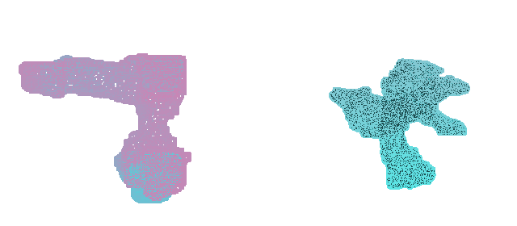
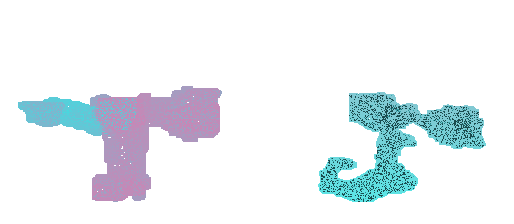
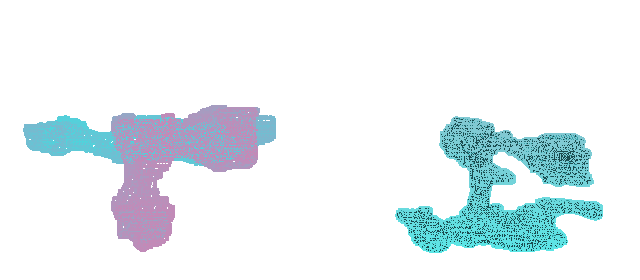
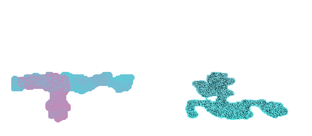
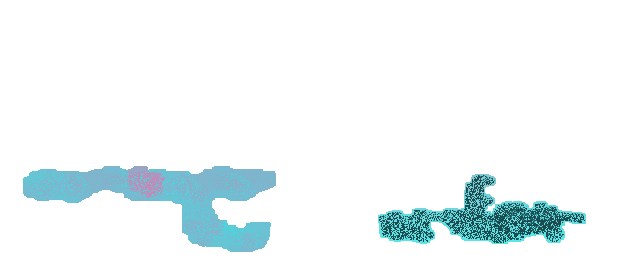
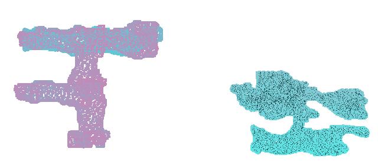
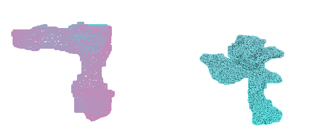
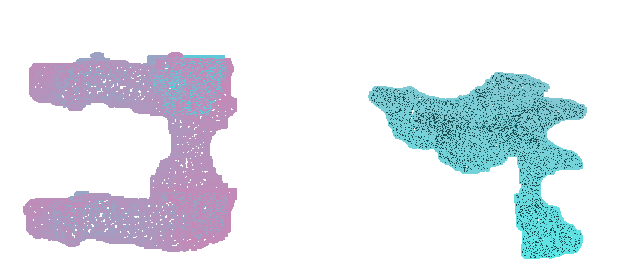
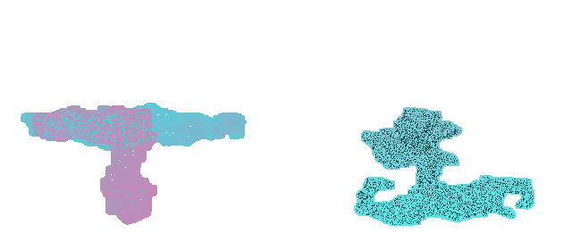
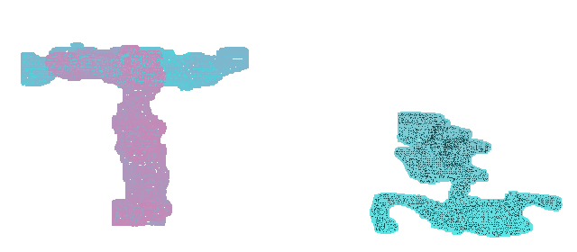
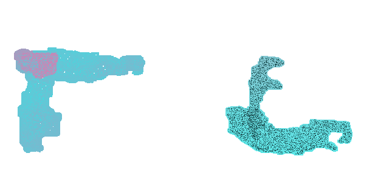
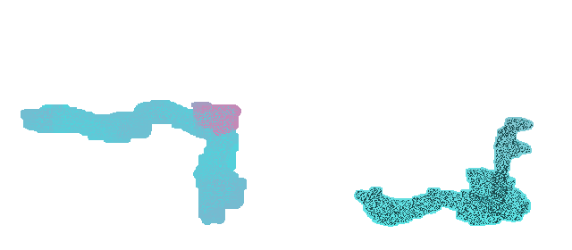
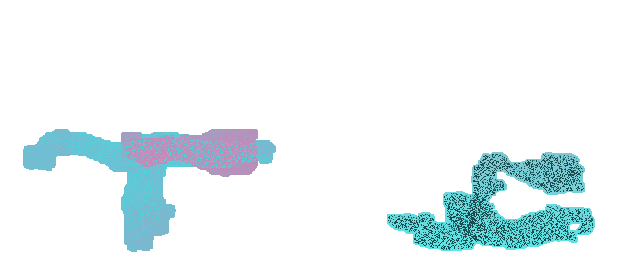
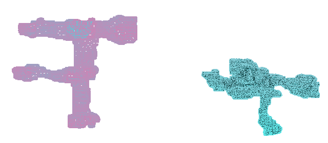
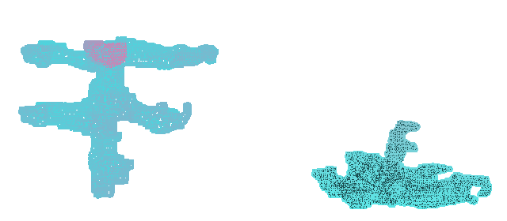
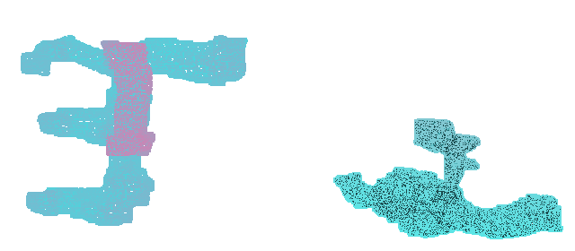
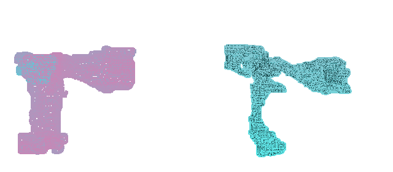
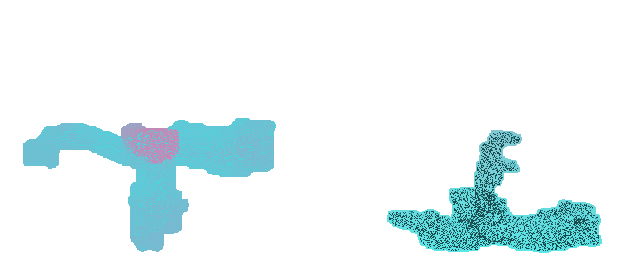
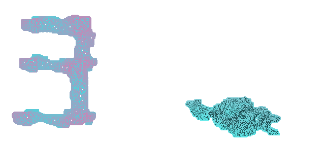
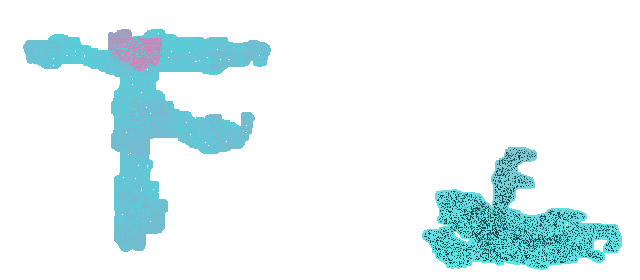